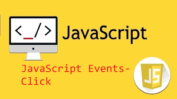

JavaScript Events
JavaScript Events
Standard JavaScript Events Including those for Mobile Devices and Animation and Transition Events
JavaScript Events
JavaScript's interaction with HTML is handled through events that occur when the user or the browser manipulates a page.
When the page loads, it is called an event. When the user clicks a button, that click too is an event. Other examples include events like pressing any key, closing a window, resizing a window, etc.
Developers can use these events to execute JavaScript coded responses, which cause buttons to close windows, messages to be displayed to users, data to be validated, and virtually any other type of response imaginable.
Events are a part of the Document Object Model (DOM) Level 3 and every HTML element contains a set of events which can trigger JavaScript Code.
We will go through a few examples of these events including...
Load
On Click
Mouse Events
Keyboard Events
Touch Events
Load Event
The load event is fired when the whole page has loaded, including all dependent resources such as stylesheets and images. This is in contrast to DOMContentLoaded, which is fired as soon as the page DOM has been loaded, without waiting for resources to finish loading.
An example is when this page loaded. You recieved an alert
It was called using this function
On Click Events
The onClick event is the most frequently used event type, which occurs when a user clicks the left button of the mouse.
Click on this text to see the click event listener in action.
Mouse Events
The MouseEvent interface represents events that occur due to the user interacting with a pointing device (such as a mouse). Common events using this interface include click, dblclick, mouseup, mousedown.
Hover your mouse over this section.
This part appears on a mouseover event, but disappears on mouseout.It's Magic!
Mouseover
The mouseover event happens when the mouse pointer passes over the section. This mouseover event adds a class to the css that changes the display property to block.
Mouseout
The mouseout event happens when the pointer moves away from the element. This mouseout event removes the class from the div and the display property reverts to none.
Keyboard Events
KeyboardEvent objects describe a user interaction with the keyboard; each event describes a single interaction between the user and a key (or combination of a key with modifier keys) on the keyboard. The event type (keydown, keypress, or keyup) identifies what kind of keyboard activity occurred.
A function is triggered when the user is pressing a key in the input field.
Click on the box and press any kep to see how it works.
Touch Events
Today, most Web content is designed for keyboard and mouse input. However, devices with touch screens (especially portable devices) are mainstream and Web applications can either directly process touch-based input by using Touch Events or the application can use interpreted mouse events for the application input. A disadvantage to using mouse events is that they do not support concurrent user input, whereas touch events support multiple simultaneous inputs (possibly at different locations on the touch surface), thus enhancing user experiences.
Touch this area on your mobile device or touchscreen.
This message is shown when a user touches the area and disappears when they remove their finger.
It works similarly to the mouseover event.